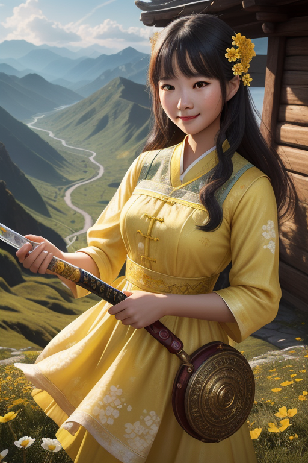

郭襄
风陵渡口初相遇，一见杨过误终身。从追星少女到峨嵋祖师，她用一生完成了最优雅的转身。
人物小传
| 姓名 | 郭襄 |
| 别名 | 小东邪、襄儿、风陵师太 |
| 身份 | 郭靖黄蓉次女、峨嵋派创派祖师 |
| 父母 | 郭靖(父)、黄蓉(母) |
| 武功 | 落英神剑掌、峨嵋剑法、九阳神功残篇 |
| 性格 | 潇洒、聪慧、执着、深情、大气 |
| 著名 | 风陵渡口初遇杨过，一见误终身 |
| 归宿 | 四十岁大彻大悟，出家创立峨嵋派 |
郭襄是金庸笔下最让人心疼的配角。风陵渡口初相遇，一见杨过误终身。从追星少女到开宗立派的一代宗师，她用一生完成了最优雅的转身。
性格分析
集大成的"小东邪"
郭襄的性格是郭靖和黄蓉的完美融合——她继承了父亲的善良正直，也继承了母亲的聪明洒脱。但最妙的是，她还有郭靖黄蓉都没有的特质：一种浑然天成的"大气"。
江湖人称她"小东邪"——黄药师的外孙女，行事风格也确有外祖父的风范。她不像郭芙那样任性骄纵，也不像郭破虏那样沉默寡言。她走到哪里都受欢迎，不是因为她刻意讨好，而是她天生就有让人舒服的气质。
但她的内心深处有一个永远无法愈合的伤——杨过。十六岁那年风陵渡口的一遇，让她的心里装下了一个人，然后用一生去释怀。

命运轨迹
奇遇与转折
杨过的大礼：最甜的毒药
杨过在郭襄十六岁生日时送了三件大礼：第一件是蒙古前锋的耳朵，第二件是烧了蒙古军粮草，第三件是揭穿了霍都的阴谋。这三件礼物让郭襄在天下英雄面前风光无限，但也让她的心从此系于杨过。
现实地说，杨过对郭襄的感情是兄妹式的关爱，但郭襄理解成了另一种可能。这不是谁的错——一个十六岁的少女遇到这样惊天动地的"示好"，很难不动心。但这甜蜜的误会，却要用一生来消化。
武功绝学
峨嵋武功体系
郭襄创立峨嵋派时，融合了家传武功（落英神剑掌、打狗棒法残招）、杨过所授的一招半式、以及自己的领悟。她还从楞伽经中发现了九阳神功的口诀，成为峨嵋九阳功的来源。
情感世界
对杨过：一生的守望
郭襄对杨过的感情，是金庸笔下最纯粹也最悲伤的单恋。她不是不知道杨过爱的是小龙女，但感情这东西不跟你讲道理。她选择了把这份感情埋在心底，不打扰、不强求。
最扎心的是——她找了他一辈子。她走遍大江南北，去过终南山古墓，去过绝情谷，去过任何一个杨过可能出现的地方。她始终没有找到。但她也没有因此消沉。四十岁时她大彻大悟，创立峨嵋派——不是"忘"了杨过，而是学会了与这份感情共存。
趣事典故
名场面：风陵渡口
郭襄和杨过在风陵渡口的相遇，是神雕侠侣中最令人唏嘘的桥段。郭襄对杨过说："大哥哥，你带我走好不好？"杨过笑着摇头。多年后郭襄回忆这一幕时已是峨嵋掌门——但那个十六岁少女的心动，此生再未改变。
冷知识：灭绝师太的师承
灭绝师太是郭襄的徒孙。所以峨嵋派中"倚天不出，谁与争锋"这句话，实际上是郭襄留下来的。郭襄知道倚天剑是母亲黄蓉所铸、内藏九阴真经的秘密，所以峨嵋派世代守护这个秘密。
现实启示
爱而不得后的优雅
郭襄最大的启示是：爱而不得不是终点。她没有变成怨妇，没有报复社会，而是把这份感情升华为创造——创立了一个流传数百年的门派。这才是最高级的"放下"。
人生的第二曲线
十六岁的郭襄以为人生就是和杨过在一起。四十岁的郭襄证明了：人生可以有第二曲线、第三曲线。爱情不是全部，还有事业、信仰、传承。
1. 不是所有的爱情都有结果——但这不妨碍你活出自己的精彩。
2. 把遗憾变成动力——郭襄用一生证明了失恋不是终点而是新起点。